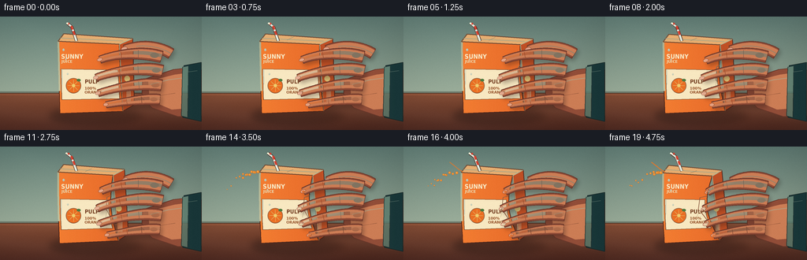
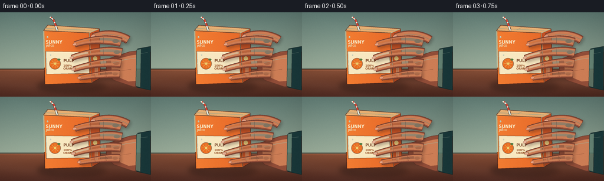
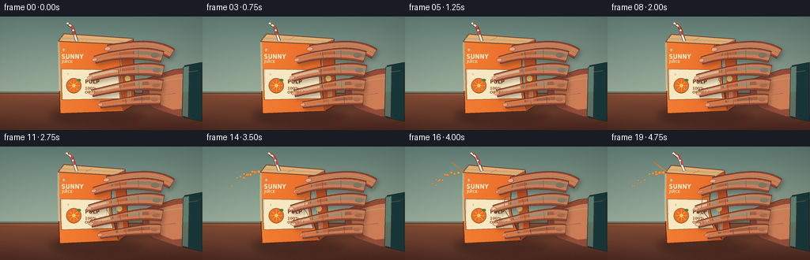
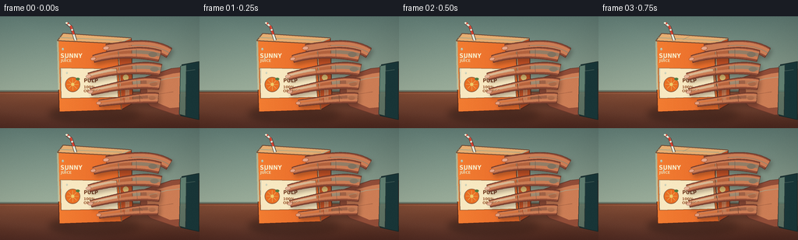

CODING AGENTS AS PIXEL WORLD MODELS
traex/DeepSeek-V4.1-Flash · mechanics_0019
点击播放 · 原生 RGB 像素
逐轮保存的候选
回放视频、检查图与代码变化。
每份候选均可单独播放。实际图片检查记录在下方工具轨迹中。
候选 01播放与检查图
点击播放 · 原生 RGB 像素


展开代码变化
--- 上一保存版本
+++ 本次保存版本
@@ -0,0 +1,522 @@
+"""Generate a 20-frame squeeze sequence from the supplied text prompt."""
+
+from __future__ import annotations
+
+import math
+from pathlib import Path
+
+import numpy as np
+from PIL import Image, ImageDraw, ImageFilter, ImageFont
+
+import artifact_io
+
+
+WIDTH = 256
+HEIGHT = 144
+FRAMES = 20
+FPS = 4.0
+SCALE = 4
+CANVAS = (WIDTH * SCALE, HEIGHT * SCALE)
+
+ROOT = Path(__file__).resolve().parent
+FONT_PATH = "/usr/share/fonts/truetype/dejavu/DejaVuSans-Bold.ttf"
+FONT_CONDENSED = "/usr/share/fonts/truetype/dejavu/DejaVuSansCondensed-Bold.ttf"
+
+
+def sp(x: float, y: float) -> tuple[int, int]:
+ return round(x * SCALE), round(y * SCALE)
+
+
+def scaled_points(points) -> list[tuple[int, int]]:
+ return [sp(x, y) for x, y in points]
+
+
+def rgba(color, alpha: int = 255) -> tuple[int, int, int, int]:
+ if len(color) == 4:
+ return color
+ return color[0], color[1], color[2], alpha
+
+
+def mix(a, b, t: float):
+ return tuple(round(a[i] + (b[i] - a[i]) * t) for i in range(3))
+
+
+def polygon(draw, points, fill=None, outline=None, width: float = 1.0):
+ pts = scaled_points(points)
+ draw.polygon(pts, fill=fill)
+ if outline is not None:
+ draw.line(pts + [pts[0]], fill=outline, width=max(1, round(width * SCALE)), joint="curve")
+
+
+def line(draw, points, fill, width: float = 1.0):
+ draw.line(scaled_points(points), fill=fill, width=max(1, round(width * SCALE)), joint="curve")
+
+
+def ellipse(draw, box, fill=None, outline=None, width: float = 1.0):
+ draw.ellipse(
+ (*sp(box[0], box[1]), *sp(box[2], box[3])),
+ fill=fill,
+ outline=outline,
+ width=max(1, round(width * SCALE)),
+ )
+
+
+def lerp(a, b, t: float):
+ return (a[0] + (b[0] - a[0]) * t, a[1] + (b[1] - a[1]) * t)
+
+
+def cubic(p0, p1, p2, p3, steps: int = 64):
+ result = []
+ for index in range(steps + 1):
+ t = index / steps
+ u = 1.0 - t
+ x = u**3 * p0[0] + 3 * u * u * t * p1[0] + 3 * u * t * t * p2[0] + t**3 * p3[0]
+ y = u**3 * p0[1] + 3 * u * u * t * p1[1] + 3 * u * t * t * p2[1] + t**3 * p3[1]
+ result.append((x, y))
+ return result
+
+
+def gradient_fill(layer, points, color0, color1, axis: str = "x"):
+ mask = Image.new("L", CANVAS, 0)
+ ImageDraw.Draw(mask).polygon(scaled_points(points), fill=255)
+ height, width = CANVAS[1], CANVAS[0]
+ ramp = np.linspace(0.0, 1.0, width if axis == "x" else height, dtype=np.float32)
+ if axis == "y":
+ ramp = ramp[:, None]
+ else:
+ ramp = ramp[None, :]
+ base = np.asarray(color0, dtype=np.float32)
+ end = np.asarray(color1, dtype=np.float32)
+ rgb = base + (end - base) * ramp[..., None]
+ if axis == "y":
+ rgb = np.repeat(rgb, width, axis=1)
+ else:
+ rgb = np.repeat(rgb, height, axis=0)
+ image = Image.fromarray(np.clip(rgb, 0, 255).astype(np.uint8), "RGB").convert("RGBA")
+ layer.paste(image, (0, 0), mask)
+
+
+def make_background() -> Image.Image:
+ yy, xx = np.mgrid[0 : CANVAS[1], 0 : CANVAS[0]].astype(np.float32)
+ xn = xx / CANVAS[0]
+ yn = yy / CANVAS[1]
+ table_line = 97.0 / HEIGHT
+ wall_t = np.clip(yn / table_line, 0, 1)
+
+ wall_top = np.array([91, 117, 110], dtype=np.float32)
+ wall_bottom = np.array([154, 172, 153], dtype=np.float32)
+ wall = wall_top + (wall_bottom - wall_top) * wall_t[..., None]
+
+ table_t = np.clip((yn - table_line) / (1.0 - table_line), 0, 1)
+ table_back = np.array([133, 78, 54], dtype=np.float32)
+ table_front = np.array([83, 45, 36], dtype=np.float32)
+ table = table_back + (table_front - table_back) * table_t[..., None]
+
+ image = np.where((yn < table_line)[..., None], wall, table)
+
+ # Fine material texture and wood grain keep the small frame from looking flat.
+ rng = np.random.default_rng(19)
+ grain = rng.normal(0.0, 1.65, (CANVAS[1], CANVAS[0], 1))
+ image += grain
+ wood = (np.sin(xx / (31.0 * SCALE) + 1.7 * np.sin(yy / (8.0 * SCALE))) * 2.3).astype(np.float32)
+ wood += (np.sin(xx / (73.0 * SCALE) - yy / (13.0 * SCALE)) * 1.3).astype(np.float32)
+ image += wood[..., None] * (yn >= table_line)[..., None]
+
+ # Broad window light from upper left, with a restrained edge vignette.
+ light = 1.055 - 0.12 * ((xn - 0.18) ** 2 + (yn - 0.08) ** 2)
+ image *= light[..., None]
+ edge = np.maximum(np.abs(xn - 0.5) * 1.35, np.abs(yn - 0.5) * 1.2)
+ image *= (1.0 - 0.16 * np.clip(edge - 0.28, 0, 1) ** 1.3)[..., None]
+
+ # Table edge catches a narrow line of reflected light.
+ horizon = round(table_line * CANVAS[1])
+ image[max(0, horizon - 2 * SCALE) : horizon + 1 * SCALE, :, :] *= 0.72
+ image[horizon + 1 * SCALE : horizon + 3 * SCALE, :, :] *= 1.12
+
+ return Image.fromarray(np.clip(image, 0, 255).astype(np.uint8), "RGB").convert("RGBA")
+
+
+def front_boundaries(p: float):
+ tl = (73.4 - 0.5 * p, 31.2 + 2.0 * p)
+ tr = (151.8 - 16.2 * p, 35.0 + 2.2 * p)
+ br = (156.1 - 11.0 * p, 120.0 - 1.3 * p)
+ bl = (75.8 - 1.0 * p, 122.8 - 0.3 * p)
+
+ def left_at(t: float):
+ x, y = lerp(tl, bl, t)
+ return x - 1.25 * p * math.sin(math.pi * t), y
+
+ def right_at(t: float):
+ x, y = lerp(tr, br, t)
+ return x - 10.8 * p * math.sin(math.pi * t), y
+
+ return tl, tr, br, bl, left_at, right_at
+
+
+def front_polygon(p: float):
+ tl, tr, br, bl, left_at, right_at = front_boundaries(p)
+ left = [left_at(i / 28) for i in range(29)]
+ right = [right_at(i / 28) for i in range(28, -1, -1)]
+ return left + right
+
+
+def point_on_boundary(t: float, p: float, side: str):
+ _, _, _, _, left_at, right_at = front_boundaries(p)
+ return left_at(t) if side == "left" else right_at(t)
+
+
+def draw_straw(draw, p: float):
+ lean = 1.3 * p
+ lower = (97.0, 31.0)
+ bend = (91.4 - lean, 13.5)
+ tip = (85.5 - 1.6 * lean, 8.5)
+ line(draw, [lower, bend, tip], rgba((69, 42, 34), 255), 3.8)
+ line(draw, [lower, bend, tip], rgba((226, 235, 221), 255), 2.5)
+ for start, end in [((94.7, 23.3), (93.1, 18.5)), ((91.9, 16.4), (90.5, 11.9)), ((87.8, 9.8), (86.6, 8.2))]:
+ line(draw, [start, end], rgba((211, 65, 48), 255), 2.4)
+ ellipse(draw, (tip[0] - 1.4, tip[1] - 1.1, tip[0] + 1.2, tip[1] + 0.9), fill=rgba((241, 239, 211), 255))
+
+
+def draw_carton(scene: Image.Image, p: float):
+ layer = Image.new("RGBA", CANVAS, (0, 0, 0, 0))
+ draw = ImageDraw.Draw(layer)
+ tl, tr, br, bl, _, _ = front_boundaries(p)
+ front = front_polygon(p)
+
+ back_tr = (tr[0] + 17.2 - 5.0 * p, tr[1] - 7.3)
+ back_br = (br[0] + 14.7 - 4.4 * p, br[1] - 8.0)
+ side = [tr, back_tr, back_br, br]
+ top = [tl, tr, back_tr, (tl[0] + 7.3, tl[1] - 9.4)]
+
+ # Carton shadow on the tabletop.
+ shadow = Image.new("RGBA", CANVAS, (0, 0, 0, 0))
+ sd = ImageDraw.Draw(shadow)
+ ellipse(sd, (63, 116, 178 - 5 * p, 136), fill=rgba((35, 22, 19), 108))
+ ellipse(sd, (90, 120, 181, 132), fill=rgba((35, 22, 19), 72))
+ shadow = shadow.filter(ImageFilter.GaussianBlur(4.5 * SCALE))
+ scene.alpha_composite(shadow)
+
+ gradient_fill(layer, side, (166, 67, 34), (210, 89, 40), "x")
+ polygon(draw, side, outline=rgba((82, 39, 28), 235), width=0.9)
+ gradient_fill(layer, top, (236, 184, 123), (209, 134, 77), "y")
+ polygon(draw, top, outline=rgba((96, 51, 34), 230), width=0.9)
+
+ gradient_fill(layer, front, (253, 143, 57), (218, 82, 33), "x")
+ polygon(draw, front, outline=rgba((86, 41, 27), 245), width=1.0)
+
+ # Paper panel shading and edge highlights.
+ left_edge = [point_on_boundary(i / 16, p, "left") for i in range(17)]
+ highlight = [(x + 0.6, y) for x, y in left_edge[:12]]
+ line(draw, highlight, rgba((255, 224, 163), 105), 2.2)
+ line(draw, [tr, back_tr], rgba((255, 226, 164), 120), 1.2)
+ line(draw, [tr, br], rgba((255, 203, 129), 90), 0.9)
+
+ # Folded top ridge and its cast shadow.
+ ridge_back = (tl[0] + 7.3, tl[1] - 9.4)
+ line(draw, [tl, tr], rgba((104, 58, 36), 220), 1.25)
+ line(draw, [ridge_back, back_tr], rgba((112, 61, 37), 205), 1.1)
+ line(draw, [tl, ridge_back], rgba((116, 66, 39), 180), 0.9)
+ line(draw, [(tl[0] + 3.2, tl[1] - 4.2), (tr[0] + 5.0, tr[1] - 4.3)], rgba((255, 221, 158), 85), 1.0)
+
+ # Cream label band follows the deformed front face.
+ y0, y1 = 66.5, 105.5
+ top_t = (y0 - tl[1]) / (bl[1] - tl[1])
+ bot_t = (y1 - tl[1]) / (bl[1] - tl[1])
+ label = []
+ for index in range(20):
+ t = top_t + (bot_t - top_t) * index / 19
+ x, y = point_on_boundary(t, p, "left")
+ label.append((x + 3.1, y))
+ for index in range(20):
+ t = bot_t + (top_t - bot_t) * index / 19
+ x, y = point_on_boundary(t, p, "right")
+ label.append((x - 3.0, y))
+ polygon(draw, label, fill=rgba((248, 232, 193), 255), outline=rgba((119, 73, 43), 180), width=0.7)
+ label_shine = [(label[0][0] + 1.4, label[0][1] + 1.1), (label[9][0] + 1.0, label[9][1] + 1.1)]
+ line(draw, label_shine, rgba((255, 249, 224), 145), 1.1)
+
+ # Citrus roundel and compact pack typography.
+ cx, cy = 93.2, 87.6
+ ellipse(draw, (cx - 9.6, cy - 9.6, cx + 9.6, cy + 9.6), fill=rgba((235, 111, 36), 255), outline=rgba((137, 66, 31), 170), width=0.65)
+ for angle in range(0, 360, 45):
+ rad = math.radians(angle)
+ line(
+ draw,
+ [(cx + 1.6 * math.cos(rad), cy + 1.6 * math.sin(rad)), (cx + 7.3 * math.cos(rad), cy + 7.3 * math.sin(rad))],
+ rgba((255, 201, 89), 180),
+ 0.55,
+ )
+ ellipse(draw, (cx - 2.0, cy - 2.0, cx + 2.0, cy + 2.0), fill=rgba((255, 211, 101), 220))
+ ellipse(draw, (cx + 4.0, cy - 8.6, cx + 9.0, cy - 5.4), fill=rgba((73, 119, 56), 230))
+
+ try:
+ label_font = ImageFont.truetype(FONT_CONDENSED, round(7.0 * SCALE))
+ small_font = ImageFont.truetype(FONT_PATH, round(4.8 * SCALE))
+ brand_font = ImageFont.truetype(FONT_CONDENSED, round(8.0 * SCALE))
+ except OSError:
+ label_font = ImageFont.load_default()
+ small_font = label_font
+ brand_font = label_font
+
+ draw.text(sp(107.4, 82.4), "PULP", font=label_font, fill=rgba((115, 62, 34), 255), anchor="lm")
+ draw.text(sp(107.2, 91.0), "100%", font=small_font, fill=rgba((150, 82, 42), 255), anchor="lm")
+ draw.text(sp(107.2, 96.0), "ORANGE", font=small_font, fill=rgba((150, 82, 42), 255), anchor="lm")
+ draw.text(sp(77.5, 50.8), "SUNNY", font=brand_font, fill=rgba((255, 240, 204), 242), anchor="lm")
+ draw.text(sp(78.0, 57.1), "JUICE", font=small_font, fill=rgba((255, 234, 191), 215), anchor="lm")
+
+ # Tiny package details, including a barcode on the visible side panel.
+ for index in range(5):
+ x = back_tr[0] - 7.5 + index * 1.15
+ line(draw, [(x, 91.0), (x, 108.2)], rgba((238, 219, 177), 190), 0.42)
+ line(draw, [(back_tr[0] - 8.2, 89.0), (back_tr[0] - 2.0, 88.7)], rgba((245, 224, 179), 160), 0.55)
+ ellipse(draw, (back_tr[0] - 10.6, 75.0, back_tr[0] - 3.4, 82.2), fill=rgba((255, 205, 105), 180))
+
+ # Creases grow from the fingers toward the top and base as pressure rises.
+ if p > 0.12:
+ strength = int(80 + 105 * p)
+ crease_alpha = min(220, strength)
+ r_top = point_on_boundary(0.31, p, "right")
+ r_mid = point_on_boundary(0.52, p, "right")
+ r_bot = point_on_boundary(0.72, p, "right")
+ line(draw, [r_top, (r_top[0] - 9.5 * p, r_top[1] + 2.3), (r_mid[0] - 12.0 * p, r_mid[1] + 2.0)], rgba((131, 56, 29), crease_alpha), 0.72)
+ line(draw, [(r_mid[0] - 10.0 * p, r_mid[1] + 1.4), (r_bot[0] - 3.3 * p, r_bot[1] - 0.6)], rgba((142, 61, 29), crease_alpha), 0.66)
+ line(draw, [(r_mid[0] - 11.4 * p, r_mid[1] + 3.1), (r_mid[0] - 13.7 * p, r_mid[1] + 10.0)], rgba((255, 189, 111), int(60 + 55 * p)), 0.55)
+ top_fold = (tl[0] + 35.0, tl[1] - 2.2 + 2.2 * p)
+ line(draw, [top_fold, (top_fold[0] + 8.0, top_fold[1] - 4.0 + 1.4 * p)], rgba((111, 58, 34), int(110 * p)), 0.6)
+
+ # Condensation beads slide very slowly down the carton.
+ beads = [(80.5, 42.0, 1.3), (83.4, 54.0, 0.8), (86.0, 72.8, 1.0), (144.0, 53.0, 0.9)]
+ for index, (bx, by, radius) in enumerate(beads):
+ by += (0.7 + 0.25 * index) * p
+ bx += 0.15 * math.sin(index * 2.1 + p * 2.4)
+ ellipse(draw, (bx - radius, by - radius * 1.25, bx + radius, by + radius * 1.25), fill=rgba((255, 247, 218), 118))
+ ellipse(draw, (bx - radius * 0.45, by - radius * 0.75, bx - radius * 0.05, by - radius * 0.18), fill=rgba((255, 255, 245), 210))
+
+ draw_straw(draw, p)
+ scene.alpha_composite(layer)
+
+
+def tapered_tube(centerline, widths):
+ left = []
+ right = []
+ for index, (point, width) in enumerate(zip(centerline, widths)):
+ prev_point = centerline[max(0, index - 1)]
+ next_point = centerline[min(len(centerline) - 1, index + 1)]
+ tx = next_point[0] - prev_point[0]
+ ty = next_point[1] - prev_point[1]
+ length = max(0.001, math.hypot(tx, ty))
+ nx, ny = -ty / length, tx / length
+ left.append((point[0] + nx * width, point[1] + ny * width))
+ right.append((point[0] - nx * width, point[1] - ny * width))
+ return left + list(reversed(right))
+
+
+def oriented_ellipse(draw, center, rx: float, ry: float, angle: float, fill, outline=None):
+ points = []
+ for index in range(32):
+ theta = 2 * math.pi * index / 32
+ x = rx * math.cos(theta)
+ y = ry * math.sin(theta)
+ points.append(
+ (
+ center[0] + x * math.cos(angle) - y * math.sin(angle),
+ center[1] + x * math.sin(angle) + y * math.cos(angle),
+ )
+ )
+ polygon(draw, points, fill=fill, outline=outline, width=0.45)
+
+
+def finger_specs(p: float):
+ pull = 3.0 * p
+ return [
+ {
+ "curve": [(205.0, 51.0), (180.0, 43.8), (146.0, 47.2), (126.8 + pull, 54.6 + 3.3 * p)],
+ "base_width": 7.2,
+ "tip_width": 4.5,
+ },
+ {
+ "curve": [(206.0, 69.0), (181.0, 63.1), (143.0, 69.2), (121.9 + pull, 77.4 + 2.1 * p)],
+ "base_width": 7.3,
+ "tip_width": 4.45,
+ },
+ {
+ "curve": [(205.0, 87.3), (181.5, 82.7), (147.0, 90.1), (124.4 + pull, 97.2 + 1.5 * p)],
+ "base_width": 7.0,
+ "tip_width": 4.25,
+ },
+ {
+ "curve": [(202.8, 105.2), (184.5, 103.5), (155.5, 108.4), (134.4 + pull, 111.8 + 1.1 * p)],
+ "base_width": 6.35,
+ "tip_width": 3.9,
+ },
+ ]
+
+
+def draw_hand(scene: Image.Image, p: float):
+ skin_dark = rgba((105, 55, 42), 255)
+ skin_shadow = rgba((145, 77, 56), 255)
+ skin = rgba((204, 125, 85), 255)
+ skin_light = rgba((235, 159, 111), 255)
+
+ # Forearm and sleeve sit behind the carton.
+ back_layer = Image.new("RGBA", CANVAS, (0, 0, 0, 0))
+ bd = ImageDraw.Draw(back_layer)
+ arm = [(181.0, 80.0), (220.0, 67.0), (248.0, 64.0), (258.0, 69.0), (258.0, 126.0), (226.0, 127.0), (193.0, 116.0), (180.0, 103.0)]
+ polygon(bd, arm, fill=skin_shadow, outline=skin_dark, width=0.9)
+ polygon(bd, [(188.0, 82.0), (222.0, 73.5), (241.0, 71.0), (241.0, 116.0), (218.0, 118.0), (190.0, 106.0)], fill=skin, outline=None)
+ line(bd, [(191.0, 86.0), (214.0, 80.0), (237.0, 77.0)], rgba((244, 176, 126), 95), 1.1)
+ line(bd, [(197.0, 101.0), (222.0, 97.0)], rgba((121, 62, 47), 80), 0.6)
+
+ # A short teal cuff anchors the hand at frame right.
+ cuff = [(233.5, 62.0), (255.0, 58.0), (255.0, 133.0), (232.0, 128.0)]
+ gradient_fill(back_layer, cuff, (44, 76, 74), (24, 53, 55), "x")
+ polygon(bd, cuff, outline=rgba((22, 38, 38), 245), width=1.0)
+ polygon(bd, [(231.5, 64.0), (239.0, 62.5), (238.0, 128.0), (230.0, 126.0)], fill=rgba((89, 121, 107), 210), outline=rgba((28, 49, 48), 220), width=0.7)
+ line(bd, [(239.0, 70.0), (250.0, 68.5)], rgba((133, 158, 136), 85), 0.55)
+
+ scene.alpha_composite(back_layer)
+
+ specs = finger_specs(p)
+ fingers = []
+ for spec in specs:
+ center = cubic(*spec["curve"], steps=58)
+ widths = []
+ for index in range(len(center)):
+ t = index / (len(center) - 1)
+ broad = spec["base_width"] + (spec["tip_width"] - spec["base_width"]) * (t**1.55)
+ knuckle = 0.45 * math.sin(t * math.pi * 2.0 + 0.2)
+ widths.append(broad + knuckle)
+ fingers.append((center, widths))
+
+ # Soft contact shadows make the fingers read as pressure against the carton.
+ shadow_layer = Image.new("RGBA", CANVAS, (0, 0, 0, 0))
+ sd = ImageDraw.Draw(shadow_layer)
+ for center, widths in fingers:
+ shadow_center = [(x + 2.0, y + 3.2) for x, y in center]
+ polygon(sd, tapered_tube(shadow_center, [w + 0.4 for w in widths]), fill=rgba((54, 29, 24), 88))
+ thumb_center = cubic((217.0, 47.0), (198.0, 35.0), (175.0, 35.5), (158.0 + 2.0 * p, 41.0 + 3.0 * p), steps=48)
+ thumb_widths = [6.8 + (5.1 - 6.8) * (i / 48) ** 1.2 for i in range(49)]
+ polygon(sd, tapered_tube([(x + 2.0, y + 3.4) for x, y in thumb_center], [w + 0.3 for w in thumb_widths]), fill=rgba((54, 29, 24), 86))
+ shadow_layer = shadow_layer.filter(ImageFilter.GaussianBlur(2.8 * SCALE))
+ scene.alpha_composite(shadow_layer)
+
+ hand_layer = Image.new("RGBA", CANVAS, (0, 0, 0, 0))
+ hd = ImageDraw.Draw(hand_layer)
+
+ # Thumb reaches over the upper-right edge of the pack.
+ thumb_poly = tapered_tube(thumb_center, thumb_widths)
+ polygon(hd, thumb_poly, fill=skin_shadow, outline=skin_dark, width=0.9)
+ thumb_inner = tapered_tube([(x, y - 0.35) for x, y in thumb_center], [w * 0.68 for w in thumb_widths])
+ polygon(hd, thumb_inner, fill=skin, outline=None)
+ line(hd, thumb_center[:36], rgba((242, 177, 130), 95), 1.05)
+ thumb_tip = thumb_center[-1]
+ thumb_prev = thumb_center[-6]
+ thumb_angle = math.atan2(thumb_tip[1] - thumb_prev[1], thumb_tip[0] - thumb_prev[0])
+ oriented_ellipse(hd, (thumb_tip[0] - 0.5, thumb_tip[1] - 0.4), 3.8, 2.4, thumb_angle, rgba((232, 172, 146), 235), rgba((119, 64, 49), 180))
+
+ for finger_index, (center, widths) in enumerate(fingers):
+ tube = tapered_tube(center, widths)
+ polygon(hd, tube, fill=skin_shadow, outline=skin_dark, width=1.0)
+
+ inner_center = [(x - 0.2, y - 0.45) for x, y in center]
+ inner_widths = [w * 0.72 for w in widths]
+ polygon(hd, tapered_tube(inner_center, inner_widths), fill=skin, outline=None)
+
+ upper_center = [(x - 0.2, y - 1.3) for x, y in center]
+ upper_widths = [w * 0.30 for w in widths]
+ polygon(hd, tapered_tube(upper_center, upper_widths), fill=rgba((238, 165, 118), 88), outline=None)
+
+ for crease_t in (0.36, 0.62):
+ pos = center[round(crease_t * (len(center) - 1))]
+ next_pos = center[min(len(center) - 1, round(crease_t * (len(center) - 1)) + 2)]
+ angle = math.atan2(next_pos[1] - pos[1], next_pos[0] - pos[0])
+ normal = (-math.sin(angle), math.cos(angle))
+ radius = widths[round(crease_t * (len(center) - 1))] * 0.65
+ line(
+ hd,
+ [(pos[0] - normal[0] * radius, pos[1] - normal[1] * radius), (pos[0] + normal[0] * radius, pos[1] + normal[1] * radius)],
+ rgba((124, 66, 50), 82),
+ 0.5,
+ )
+
+ tip = center[-1]
+ before_tip = center[-7]
+ angle = math.atan2(tip[1] - before_tip[1], tip[0] - before_tip[0])
+ nail_alpha = 225 if finger_index < 3 else 210
+ oriented_ellipse(
+ hd,
+ (tip[0] - 0.4, tip[1] - 0.25),
+ 3.35 if finger_index < 3 else 3.0,
+ 2.15,
+ angle,
+ rgba((232, 172, 146), nail_alpha),
+ rgba((122, 66, 50), 170),
+ )
+ if p > 0.68:
+ ellipse(
+ hd,
+ (tip[0] - 2.0, tip[1] - 1.25, tip[0] + 2.2, tip[1] + 1.55),
+ fill=rgba((247, 197, 157), int(36 + 50 * (p - 0.68))),
+ )
+
+ # Knuckle pads catch the key light.
+ for x, y, rx, ry in [(196.0, 49.0, 5.5, 3.2), (198.0, 68.0, 5.3, 3.0), (197.0, 87.0, 5.0, 2.8), (195.0, 105.0, 4.5, 2.5)]:
+ ellipse(hd, (x - rx, y - ry, x + rx, y + ry), fill=rgba((228, 149, 103), 58))
+
+ scene.alpha_composite(hand_layer)
+
+
+def draw_juice_burst(scene: Image.Image, p: float):
+ progress = max(0.0, (p - 0.66) / 0.34)
+ if progress <= 0:
+ return
+ layer = Image.new("RGBA", CANVAS, (0, 0, 0, 0))
+ draw = ImageDraw.Draw(layer)
+ origin = (75.6, 32.5)
+ rng = np.random.default_rng(71)
+ for index in range(13):
+ phase = (progress * 0.88 + index * 0.115) % 1.0
+ distance = 4.0 + 46.0 * phase
+ angle = math.radians(188 + 12 * math.sin(index * 1.7))
+ x = origin[0] + math.cos(angle) * distance * 0.95
+ y = origin[1] + math.sin(angle) * distance * 0.55 + 0.0105 * distance * distance
+ radius = 0.55 + 1.15 * (1.0 - phase) + float(rng.uniform(0.0, 0.35))
+ ellipse(draw, (x - radius, y - radius, x + radius, y + radius), fill=rgba((255, 143, 35), 230), outline=rgba((174, 70, 26), 150), width=0.35)
+ ellipse(draw, (x - radius * 0.38, y - radius * 0.42, x, y - radius * 0.04), fill=rgba((255, 228, 145), 195))
+ if progress > 0.18:
+ jet = cubic(origin, (69.0, 29.0), (63.5, 23.0), (58.5, 20.0), steps=16)
+ line(draw, jet, rgba((241, 117, 31), int(150 + 90 * progress)), 1.1)
+ scene.alpha_composite(layer)
+
+
+def draw_foreground_light(scene: Image.Image):
+ # A very light paper grain and a warm rim keep the composition photographic.
+ arr = np.asarray(scene.convert("RGB"), dtype=np.float32)
+ rng = np.random.default_rng(4)
+ grain = rng.normal(0.0, 1.15, (CANVAS[1], CANVAS[0], 1))
+ arr = np.clip(arr + grain, 0, 255)
+ return Image.fromarray(arr.astype(np.uint8), "RGB").convert("RGBA")
+
+
+def render_frame(index: int) -> np.ndarray:
+ t = index / (FRAMES - 1)
+ pressure = 0.035 + 0.965 * (t**1.22)
+
+ scene = make_background()
+ draw_carton(scene, pressure)
+ draw_hand(scene, pressure)
+ draw_juice_burst(scene, pressure)
+ scene = draw_foreground_light(scene)
+
+ frame = scene.convert("RGB").resize((WIDTH, HEIGHT), Image.Resampling.LANCZOS)
+ return np.asarray(frame, dtype=np.uint8)
+
+
+def main():
+ frames = np.stack([render_frame(index) for index in range(FRAMES)])
+ artifact_io.save(frames, ROOT)
+ print(f"Saved {len(frames)} frames to {ROOT}")
+
+
+if __name__ == "__main__":
+ main()
候选 02播放与检查图
点击播放 · 原生 RGB 像素

展开代码变化
--- 上一保存版本
+++ 本次保存版本
@@ -327,25 +327,25 @@
def finger_specs(p: float):
- pull = 3.0 * p
+ squeeze = 2.2 * p
return [
{
- "curve": [(205.0, 51.0), (180.0, 43.8), (146.0, 47.2), (126.8 + pull, 54.6 + 3.3 * p)],
+ "curve": [(205.0, 51.0), (180.0, 43.8), (146.0, 47.2), (120.0 - squeeze, 54.6 + 3.3 * p)],
"base_width": 7.2,
"tip_width": 4.5,
},
{
- "curve": [(206.0, 69.0), (181.0, 63.1), (143.0, 69.2), (121.9 + pull, 77.4 + 2.1 * p)],
+ "curve": [(206.0, 69.0), (181.0, 63.1), (143.0, 69.2), (114.0 - squeeze, 77.4 + 2.1 * p)],
"base_width": 7.3,
"tip_width": 4.45,
},
{
- "curve": [(205.0, 87.3), (181.5, 82.7), (147.0, 90.1), (124.4 + pull, 97.2 + 1.5 * p)],
+ "curve": [(205.0, 87.3), (181.5, 82.7), (147.0, 90.1), (116.5 - squeeze, 97.2 + 1.5 * p)],
"base_width": 7.0,
"tip_width": 4.25,
},
{
- "curve": [(202.8, 105.2), (184.5, 103.5), (155.5, 108.4), (134.4 + pull, 111.8 + 1.1 * p)],
+ "curve": [(202.8, 105.2), (184.5, 103.5), (155.5, 108.4), (127.0 - 0.9 * p, 111.8 + 1.1 * p)],
"base_width": 6.35,
"tip_width": 3.9,
},
@@ -394,7 +394,7 @@
for center, widths in fingers:
shadow_center = [(x + 2.0, y + 3.2) for x, y in center]
polygon(sd, tapered_tube(shadow_center, [w + 0.4 for w in widths]), fill=rgba((54, 29, 24), 88))
- thumb_center = cubic((217.0, 47.0), (198.0, 35.0), (175.0, 35.5), (158.0 + 2.0 * p, 41.0 + 3.0 * p), steps=48)
+ thumb_center = cubic((217.0, 47.0), (198.0, 35.0), (175.0, 35.5), (136.5 - 3.0 * p, 41.0 + 3.0 * p), steps=48)
thumb_widths = [6.8 + (5.1 - 6.8) * (i / 48) ** 1.2 for i in range(49)]
polygon(sd, tapered_tube([(x + 2.0, y + 3.4) for x, y in thumb_center], [w + 0.3 for w in thumb_widths]), fill=rgba((54, 29, 24), 86))
shadow_layer = shadow_layer.filter(ImageFilter.GaussianBlur(2.8 * SCALE))
候选 03播放与检查图
点击播放 · 原生 RGB 像素


展开代码变化
--- 上一保存版本
+++ 本次保存版本
@@ -5,6 +5,7 @@
import math
from pathlib import Path
+import imageio.v2 as imageio
import numpy as np
from PIL import Image, ImageDraw, ImageFilter, ImageFont
@@ -92,7 +93,7 @@
rgb = np.repeat(rgb, width, axis=1)
else:
rgb = np.repeat(rgb, height, axis=0)
- image = Image.fromarray(np.clip(rgb, 0, 255).astype(np.uint8), "RGB").convert("RGBA")
+ image = Image.fromarray(np.clip(rgb, 0, 255).astype(np.uint8)).convert("RGBA")
layer.paste(image, (0, 0), mask)
@@ -133,7 +134,7 @@
image[max(0, horizon - 2 * SCALE) : horizon + 1 * SCALE, :, :] *= 0.72
image[horizon + 1 * SCALE : horizon + 3 * SCALE, :, :] *= 1.12
- return Image.fromarray(np.clip(image, 0, 255).astype(np.uint8), "RGB").convert("RGBA")
+ return Image.fromarray(np.clip(image, 0, 255).astype(np.uint8)).convert("RGBA")
def front_boundaries(p: float):
@@ -495,7 +496,7 @@
rng = np.random.default_rng(4)
grain = rng.normal(0.0, 1.15, (CANVAS[1], CANVAS[0], 1))
arr = np.clip(arr + grain, 0, 255)
- return Image.fromarray(arr.astype(np.uint8), "RGB").convert("RGBA")
+ return Image.fromarray(arr.astype(np.uint8)).convert("RGBA")
def render_frame(index: int) -> np.ndarray:
@@ -515,6 +516,7 @@
def main():
frames = np.stack([render_frame(index) for index in range(FRAMES)])
artifact_io.save(frames, ROOT)
+ imageio.mimsave(ROOT / "video.mp4", list(frames), fps=FPS, codec="libx264", quality=8, macro_block_size=1)
print(f"Saved {len(frames)} frames to {ROOT}")
可观测工具轨迹
实际执行的命令与返回图片。
命令 1exit 0
/bin/bash -c "pwd && rg --files -g 'GENERATION_RULES.md' -g 'prompt.txt' -g 'task_spec.json' -g '"'!*.mp4'"' -g '"'!*.webm'"'"
命令 2exit 0
/bin/bash -c 'ls -la'
命令 3exit 0
/bin/bash -c 'git status --short --branch'
命令 4exit 0
/bin/bash -c 'cat GENERATION_RULES.md'
命令 5exit 0
/bin/bash -c 'cat prompt.txt'
命令 6exit 0
/bin/bash -c 'cat task_spec.json'
命令 7exit 0
/bin/bash -c 'cat artifact_io.py'
命令 8exit 0
/bin/bash -c 'cat player_template.html'
命令 9exit 0
/bin/bash -c 'python generate.py'
命令 10exit 0
/bin/bash -c "python - <<'PY'
from PIL import Image
import numpy as np
chars=' .,:;irsXA253hMHGS#9B&@'
for n in (0,6,12,19):
a=np.asarray(Image.open(f'frames/{n:02d}.png').convert('L').resize((96,36)))
print(f'\\nFRAME {n:02d}')
for row in a:
print(''.join(chars[min(len(chars)-1,int(v)*len(chars)//256)] for v in row))
PY"命令 11exit 0
/bin/bash -c 'python generate.py'
命令 12exit 0
/bin/bash -c 'which chafa || which viu || which img2txt || true'
命令 13exit 0
/bin/bash -c "python - <<'PY'
from PIL import Image
import numpy as np
im=np.asarray(Image.open('inspection.png'))
print('inspection', im.shape, im.min(), im.max(), im.mean(axis=(0,1)).round(2))
for n in (0,6,12,19):
a=np.asarray(Image.open(f'frames/{n:02d}.png')).astype(np.int16)
print(n, 'mean', a.mean((0,1)).round(1), 'unique', len(np.unique(a.reshape(-1,3),axis=0)))
PY"命令 14exit 0
/bin/bash -c "python - <<'PY'
from PIL import Image, ImageDraw
import numpy as np
# Nearest 4x crop of the action region for direct pixel inspection.
im=Image.open('frames/19.png').crop((55,20,225,132)).resize((680,448),Image.Resampling.NEAREST)
im.save('.tmp/action_crop.png')
# Contrast and color boundaries in coarse blocks.
a=np.asarray(Image.open('frames/19.png')).astype(float)
for y in range(0,144,8):
row=[]
for x in range(0,256,8):
p=a[y:y+8,x:x+8].mean((0,1))
if p[0]>220 and p[1]<170: c='O' # orange
elif p[0]>205 and p[1]>145 and p[2]>115: c='S' # skin
elif p[0]>200 and p[1]>185 and p[2]>145: c='P' # paper
elif p[0]<65: c='@'
elif p[2]>p[0]+10: c='T'
else: c='.'
row.append(c)
print(''.join(row))
PY"命令 15exit 0
/bin/bash -c "python - <<'PY'
from PIL import Image
import numpy as np
A=np.stack([np.asarray(Image.open(f'frames/{i:02d}.png')).astype(np.float32) for i in range(20)])
d=np.abs(np.diff(A,axis=0)).mean((1,2,3))
print('mean abs frame differences:')
print(' '.join(f'{x:.2f}' for x in d))
print('total change start-end:',np.abs(A[-1]-A[0]).mean().round(2))
print('changed pixels >8:',((np.abs(A[-1]-A[0]).max(2)>8).mean()*100).round(1),'%')
PY"命令 16exit 0
/bin/bash -c "python - <<'PY'
from PIL import Image
import numpy as np
for n in [0,10,19]:
a=np.asarray(Image.open(f'frames/{n:02d}.png'))
# orange-ish carton bounding box
m=(a[:,:,0]>175)&(a[:,:,1]>45)&(a[:,:,1]<165)&(a[:,:,2]<100)
ys,xs=np.where(m)
print(n, 'orange bbox', (xs.min(),ys.min(),xs.max(),ys.max()), 'count',len(xs))
# skin-ish, right hand bounding
m=(a[:,:,0]>170)&(a[:,:,1]>95)&(a[:,:,1]<195)&(a[:,:,2]>65)&(a[:,:,2]<160)
ys,xs=np.where(m)
print(' skin bbox', (xs.min(),ys.min(),xs.max(),ys.max()),'count',len(xs))
PY"命令 17exit 0
/bin/bash -c 'which ffmpeg || true'
命令 18exit 0
/bin/bash -c "python - <<'PY' mods=['imageio','imageio_ffmpeg','cv2','av','moviepy'] for m in mods: try: mod=__import__(m) print(m,'yes',getattr(mod,'__version__','')) except Exception as e: print(m,'no') PY"
命令 19exit 0
/bin/bash -c 'python generate.py'
命令 20exit 0
/bin/bash -c "python - <<'PY'
from pathlib import Path
from PIL import Image
import numpy as np
import imageio.v2 as iio
files=sorted(Path('frames').glob('*.png'))
assert len(files)==20, len(files)
frames=np.stack([np.asarray(Image.open(p).convert('RGB')) for p in files])
assert frames.shape==(20,144,256,3), frames.shape
assert all(len(np.unique(f.reshape(-1,3),axis=0))>1000 for f in frames)
reader=iio.get_reader('video.mp4')
meta=reader.get_meta_data(); count=sum(1 for _ in reader); reader.close()
print('frames:',frames.shape,'fps:',meta.get('fps'),'duration:',meta.get('duration'),'decoded:',count)
print('video bytes:',Path('video.mp4').stat().st_size,'npz bytes:',Path('pixels.npz').stat().st_size,'html bytes:',Path('index.html').stat().st_size)
print('all frames nonblank and RGB: OK')
PY"命令 21exit 0
/bin/bash -c "python - <<'PY'
from PIL import Image
im=Image.open('inspection.png')
# Report the eight-sheet's approximate color coverage, useful as a basic quality check.
import numpy as np
a=np.asarray(im).astype(float)
print('inspection:', im.size, 'mean RGB:', a.mean((0,1)).round(1).tolist())
print('dark pixels:', round(float((a.max(2)<35).mean()*100),1),'%')
print('bright pixels:', round(float((a.min(2)>190).mean()*100),1),'%')
PY
ls -lh generate.py video.mp4 inspection.png frames/00.png frames/19.png"保存候选 3 份；完成命令 21 次；可验证图片返回 0 张。原始 API 响应与完整日志保留在本地。